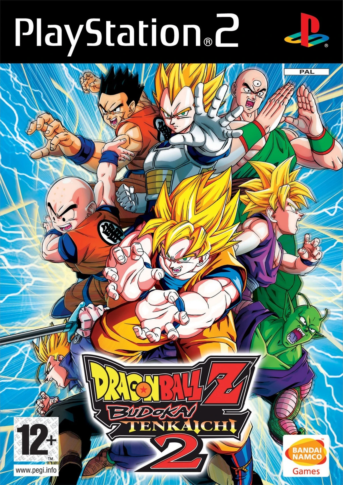

Ya esta disponible el nuevo Dragon Ball Sparking Zero!
Todo lo que necesitas saber antes de jugarlo y porque es tan especial
Dragon ball sparking zero o DBZ SZ es la secuela de una saga de
videojuegos de dragon ball que prometia ser una trilogia pero
sorprendentemente la empresa Bandai Namco Entertainment Inc ha
desarrollado el tan esperado juego
Pero... Porque es tan importante este juego??
Primero hay que tener en cuenta el contexto en el que se publica esta nueva entrega
Dragon Ball Z Budokai Tenkaichi es una saga de videojuegos de dragon ball considerada por muchos la mejor de todos los tiempos, en 2007 salió la que iba a ser supuestamente la ultima entrega que recibia el nombre Dragon Ball Z Budokai Tenkaichi 3 y estaba disponible para Play station 2 y para Wii
- Dragon Ball Z Budokai Tenkaichi
- Dragon Ball Z Budokai Tenkaichi 2

- Dragon Ball Z Budokai Tenkaichi 3

| Dragon Ball Z Budokai Tenkaichi |
Capçalera 2 |
| Personajes DBZBT |
Personajes DBZBT 2 |
| Dada 3 |
Dada 4 |